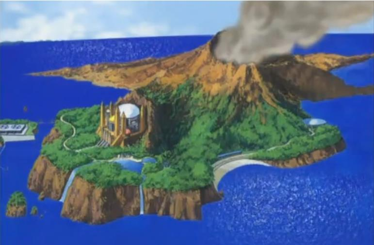
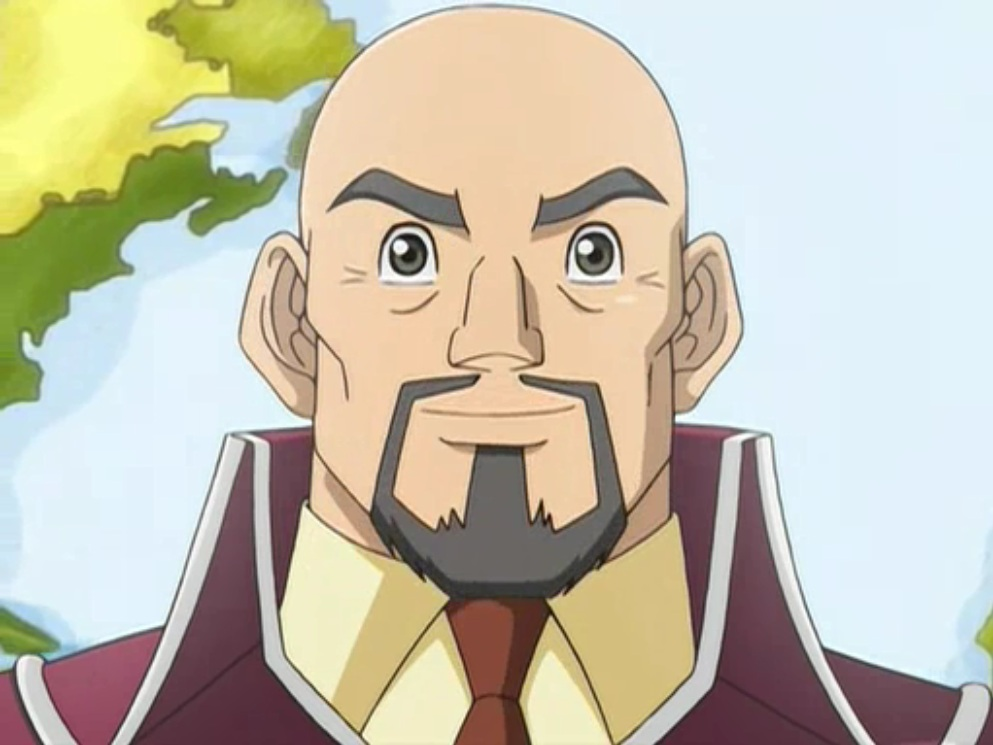
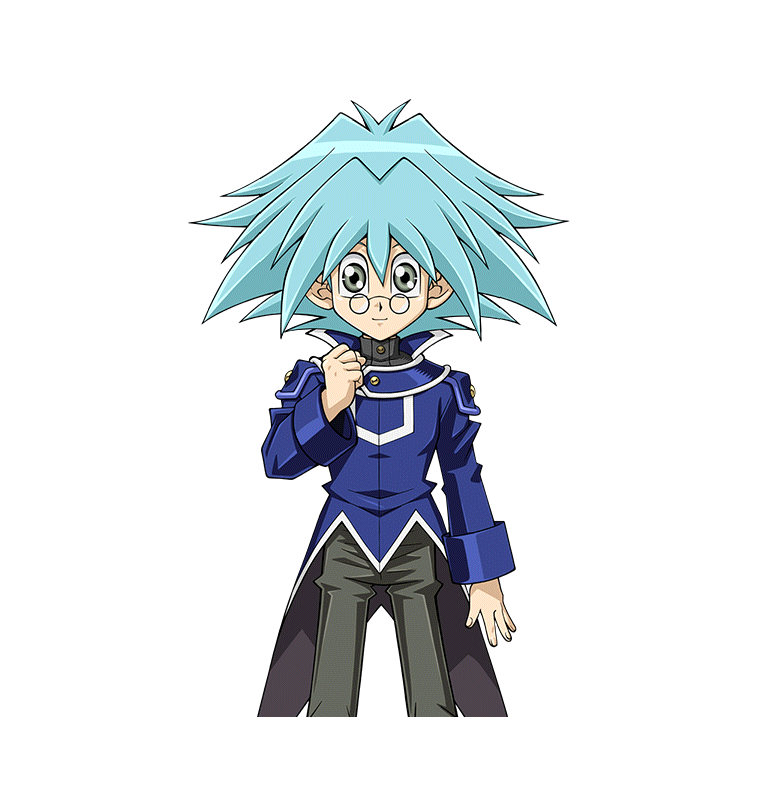
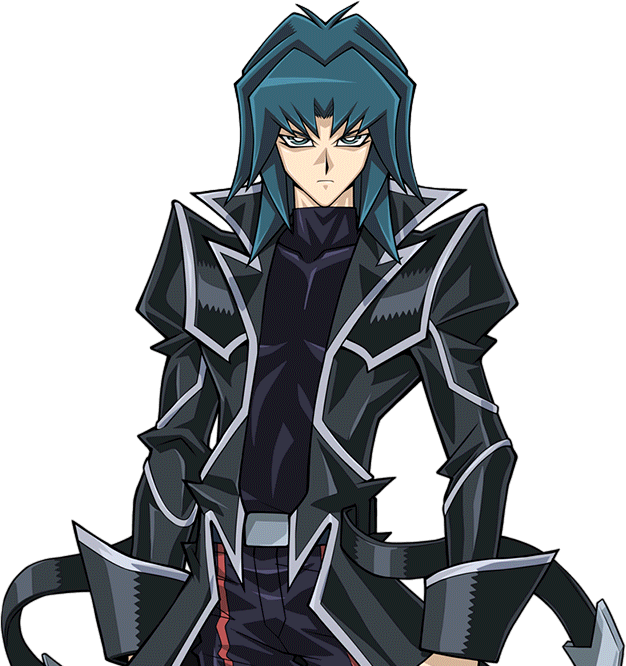
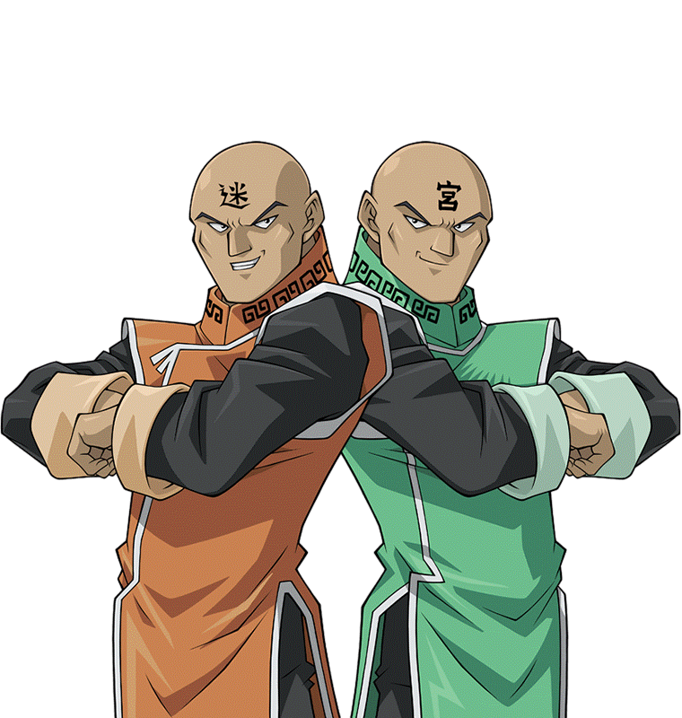
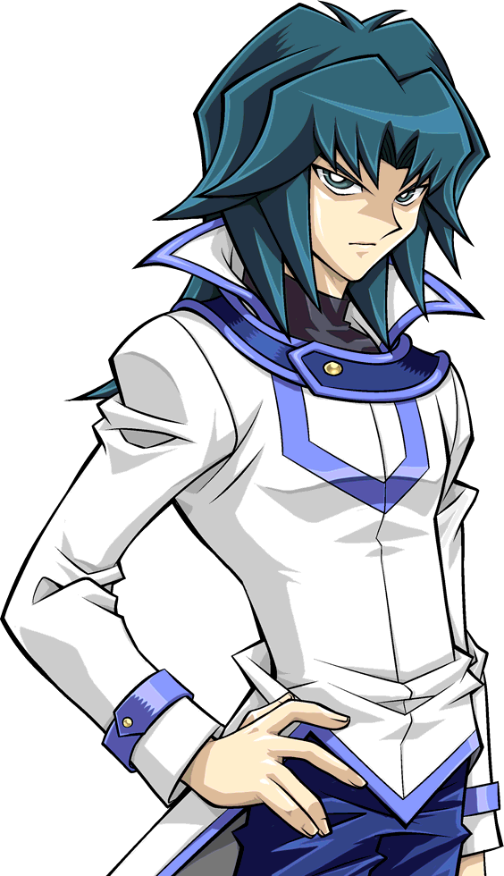
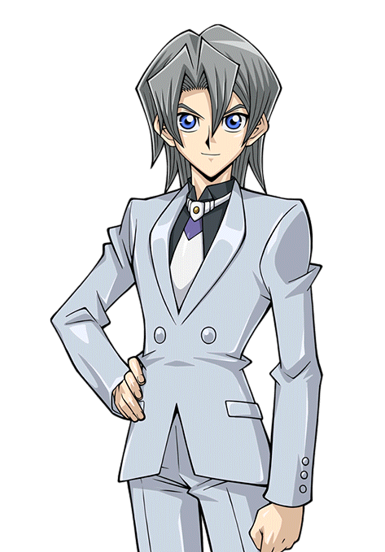

This is it! After this chapter, we will finally return our focus on what's happened to Yuya and Yuri! Let's enjoy seeing, Judai, Serena, and everyone else getting together!
Yugioh: The Power of Four
Most of the school, particularly the Blue students,
cheered loudly from Serena.
's decision. However, those that actually knew her stood stunned. They were all under the impression that she hated Obelisk Blue because the dorm shared the same name as
Akaba Leo 's
Elite Soldier Unit.
She herself had said she would never set foot inside that place. They all wondered what could have changed her mind.
As they both cheered and pondered, Serena saw Samejima,
clearly taken aback by this declaration, smiled and nodded. He approved of her choice.
Judai: Serena chose Obelisk Blue? Why?
He asked himself. He was surprised further when he heard Asuka
laughing next to him.
Judai: Asuka? Why are you laughing? His girlfriend smiled.
Asuka (GX): I think I know why... but perhaps we should hear the reason from Serena herself. She answered mysteriously.
Asuka (GX): I noticed it after the Duel. The way they interacted, the way they looked at one another... it's exactly like me and Judai.
Being in love herself, it was clear to Asuka that Serena and
Sho
had already developed strong feelings for each other. She figured those feelings were a big factor into why Serena chose the dorm she previously despised. Judai didn't
seem to get it though. She couldn't blame him; romance was still something new to him.
Principle Samejima, the other Asuka,
Yusho,
Rei and the other Fusion
Dimension students thought to themselves why Serena made that choice. It was baffling them.
Serena: Well, I think I should go. There are others waiting to qualify.
Serena said as she began to step down from the arena.
Sho: Sure, of course. I hope you enjoy your stay in Duel Academy. I know I did.
Sho said while smiling. Serena nodded back.
Serena: So do I. Just as she was about to leave...
Sho: Serena, wait a second! I want to say something else!
He said in a hurry. Serena stopped and turned back to him.
Serena: Y-Yes?
She asked, sounding curious and nervous. Sho blushed a little as he spoke.
Sho: I just... wanted to say that...
He hesitated for a second.
Sho: I liked your hair... when it was in that ponytail from before. I don't know why you let it down before the Duel.
Serena: Really? You liked my hair... when I had my ribbon on?
Serena asked, turning red herself as she put a hand through her hair. This was the first time anyone said something like that to her. She found herself smiling from
that comment.
Sho: Yeah, I did. I think it... suits you better.
Sho said, saying it soft enough that it couldn't be overheard by the crowd.
Serena: Thanks... for telling me that.
Serena said warmly before she walked away, with Sho still smiling as he watched her go. He then left himself so that the next qualification Duel could take place.
As she came down, Serena was bombarded by questions from her fellow runaway students, mostly why she picked the dorm she previously wanted nothing to do with.
Alex: Why did you change your mind, Serena? Asked Alex, who spoke the loudest. Serena turned to him and smiled.
Serena: I have my reasons.
That was all she said before walking away, leaving the others very confused. After a minute, the crowds finally became silent again before Principle Samejima spoke again.
Samejima: Now then, let us continue the Qualification Duels! Next up, participant number 002!
Chapter 14: Moving forward. Serena's decision.
It took a couple of hours to complete all the remaining qualifying Duels. Some lasted longer than others, but they were all worth watching. Nearly all of Yusho's
students both qualified and chose to be in Ra Yellow. This didn't surprise Judai, Serena, Yusho, the Asuka who fled with them, or Principle Samejima. What did surprise
them, however, was that three of them chose to occupy Osiris Red instead.
They were Stacy McNard (the red haired girl), Tyler Brooks (the green haired boy), and the blonde haired Alex Parker. While all three scored high enough to get into
Ra Yellow, they choose to be in the dorm that Judai stayed in. When asked after their exams by Judai himself, they said it was to repay him for helping them escape
from Academia. Both Stacy and Tyler had lost hope of ever getting out until Judai showed up and changed everything. Alex was so grateful to Judai when he rescued him
from Sanders that he wanted to become a strong Duelist just like him. Basically, the young trio felt inspired to walk in his footsteps and to make him, and Osiris Red
as a whole, proud. This nearly brought the former Osiris Red student to tears and told them he was grateful.
Judai suggested to Yusho that everyone should have a party at the Osiris Red dorm to celebrate. He agreed and got permission from Samejima to do so.
Later on that evening, Judai, his Asuka, and Sho were the first to arrive at the dorm, carrying all the food and supplies they needed.
Sho: When is everyone getting here?
Sho asked as they got started setting everything up.
Judai: Yusho told me that Serena and the other students will arrive after they all got their new school attire. Don't worry; we'll be ready to party by the time they get here!
Judai said enthusiastically.
Sho smiled back, happy to be with his best friend again. He missed hanging out with him like the old days.
He especially missed him when he needed someone to talk to when things in his life went bad... like now. Only, he wasn't sure if he could tell Judai about it. He tried
his best not to show the pain and sadness he had been keeping to himself since he came back to the island. Sho almost panicked when both Rei and
Kenzan
asked about his older brother. He couldn't tell them what had happened to
Ryo. He wasn't ready to tell
anyone, not even his best friend… not yet.
Judai: Sho, you okay buddy?
Judai asked, seeing the look his best friend had. Distracted, he shook his head and chuckled.
Sho: Sorry, big bro! Just thinking about old times, that's all! Trust me, I'm fine!
He answered with, he hoped, a convincing smile. He was about to open a box of silverware to place on the table where the food buffet would be. Judai blinked.
Judai: You sure? Cause it didn't look like you remembered one of the good times...
He said, sounding a little concerned. This caused a reaction he didn't anticipate.
Sho: I said I'm fine!
Sho suddenly snapped, throwing box across the room. The contents spilled everywhere. Judai and Asuka stared at him, shocked by his unexpected outburst. Sho realized
his mistake and lowered his head in shame.
Sho: Sorry guys. I didn't mean to yell at you...
He apologized as he began cleaning up.
Asuka (GX): Sho, what's wrong? Can't you tell us?
Asuka asked, sounding very concerned as she and Judai went to help. She knew Sho for years, and she had never seen him lose it like that. She at first thought it had
to do with Serena, that she may have hurt him in some way. But her gut told her it was something else, something more personal...
However, her friend didn't answer. After all the silverware had been picked up, cleaned, and placed on the table, Sho stared back at Asuka. An idea came to him then.
Something to both answer his own questions and distract the couple from learning what was really hurting him. He hoped it would work.
Sho: You're right, Asuka. Something has been bothering me lately... and it's you!
He shouted, pointing at Asuka. This definitely threw the two for a loop.
Asuka (GX): M-Me?!
A startled Asuka asked. She had no idea what was he was referring to.
Asuka (GX): What did I do?!
Judai: Sho, you know Asuka! We both do! She would never hurt anyone!
Judai said in her defense. Sho looked Judai square in the eye.
Sho: Judai, I'm not sure if this is Asuka at all!
Judai and Asuka became even more confused.
Judai: What the heck are you talking about?
Judai asked. Sho didn't break his gaze as he revealed his reason.
Sho: After my Duel with Serena, I saw something impossible. I saw Asuka with you in the stands... while she was also with Manjoume - kun, Kenzan-kun, and Rei at the same time! Asuka was in two places at once! One of them is an imposter, I'm sure of it! It could be her!
Sho shouted, pointing at Asuka again.
There was a stunned silence. Sho was sure Judai would deny his girlfriend was some disguised sicko who wanted to get close enough to harm him. He was also positive the
Asuka in front of him would say he was being ridiculous. The couple looked at each other before their eyes widened, like they suddenly understood something Sho didn't.
A moment later, they had both started laughing loudly. Judai was laughing so hard he actually fell on his back. Asuka tried not to double over herself while covering
her mouth.
Clearly, this was not what Sho had expected at all. He stared dumbstruck at the two, completely bewildered.
Sho: You think this is funny?! I'm being serious!
Sho said, trying to get them to listen. Judai got back up while he still laughed.
Judai: Sho, buddy... there's no imposter! There really are two Asukas! The one you saw with Manjome and the others is from another world!
He explained as he tried to calm down.
Asuka (GX): He's right. Judai explained it to me before you found us earlier. I really am the Asuka you know.
Asuka said, still laughing a little. Sho looked and felt completely lost.
Sho: Say... what?!
He said, sounding dumb now while blinking twice.
Any thought of his real problem was now swept out of this mind. After finally getting himself under control, Judai explained to Sho about his mission to save Serena
and how he ended up bringing an alternate version of Asuka here to their world. The little guy was more amazed than confused at this point.
Sho: Serena... is from another world?! The same world as that "other" Asuka?!
Sho asked, who could barely stand at this point.
Sho: Pretty much, bud. Sorry I couldn't tell you before.
Judai apologized. It took a minute or two for Sho to recover from the huge revelation.
Sho: Don't be. I had no way of knowing. And Asuka-san... sorry for accusing you.
Sho said regretfully to Asuka, who shook her head.
Asuka: It's okay. Let's just put it behind us and finish getting this place set up.
Asuka a suggéré.
She suggested. Sho was more than happy to do so. He was also grateful. His little diversion may have gone differently than he thought, but at least it worked. Now they
think nothing was wrong with him.
At this point, they just had to set up all the decorations. Thankfully, there weren't a lot. Before long, the place looked ready. Asuka said she needed a bathroom
break, so she excused herself. Judai and Sho took a break themselves.
Judai: Man, it sure feels good to be back here again.
Sho: Sure does. The weird thing is that neither of us are students this time.
Judai: True. Speaking of students, what did you think of Serena?
Judai asked. To his surprise, Sho went a little red.
Sho: W-What do you mean?
He asked, sounding nervous. Judai tilted his head.
Judai: You know, you just dueled her. She was pretty strong, wasn't she?
ho then smiled as he nodded back.
Sho: Yeah, she was pretty.
He said very softly.
Judai: Huh? Didn't catch that bud.
Judai said, trying to hear him. Sho panicked a little before he spoke again.
Sho: Oh, I said she was pretty strong alright! She nearly got me a couple of times! I never thought she'd actually force me to end our Duel in a DRAW.
He said more loudly. He didn't want Judai to know of his growing feelings for Serena. Judai laughed, who didn't seem to notice anything was amiss.
Judai: I was just as surprised. But then again, knowing how she was trained, it really shouldn't come as a surprise. Don't you think?
Sho shook his head.
Sho: No, it shouldn't. I still can't believe she's from a whole other world. I'm also still shocked about that other school she used to go to. What the students
there were doing...
Sho said, remembering what Judai said about Academia.
Sho: I'm glad you got her out of there. She will definitely be happier here. He said. Judai nodded.
Judai: Absolutely.
Sho then looked down at the floor, thinking. He couldn't imagine what kind of life Serena had before Judai found her. He was very grateful to him for bringing her here...
where he had met her. He hoped he could spend some more time with her, to get to know her more...
Before Sho could say any another word, their old friends came walking in.
Kenzan: Judai-aniki! I missed you, you old brachiosaurus-don!
Kenzan cried happily as he ran to Judai hugged him.
Judai: Haha, good to see you too Kenzan!
Judai then saw that with him were Manjome and Rei. The former smirked as he too approached his old rival.
Judai: Manjome! How ya been?
Judai asked as he released himself from Kenzan's grip. The black dressed Duelist chuckled.
Manjoume: Pretty good, actually. When I heard you came back, I wasn't going to pass up a chance to take you down at last. Not only that, but I'm pretty sure I
finally have the girl of my dreams.
He said, brimming with confidence. Unexpectedly, Judai wrapped around his shoulder (which annoyed him).
Judai: That's great! Me too! He said happily. Manjome, Kenzan, and Rei gasped in surprise.
Rei: You got a girlfriend too? Rei asked, sounding slightly disappointed. Judai nodded.
Judai: Oh yeah, she's the best! So Manjome... Judai said, turning to his rival, who forced Judai's arm off of him.
Judai: Who did you hook up with? Manjome smiled like nothing could go wrong.
Manjoume: Well, it's not official yet, but it's only a matter of time. Now try not to feel jealous, but it's...
He then stopped himself and shook his head. He had a much better idea.
Manjoume: Actually, you tell us about your girl first. I'm sure she's okay for someone like you, but I promise you Judai... my woman is way more special.
He said. Judai and Sho both raised an eyebrow. Kenzan and Rei shook their heads, not believing how delusional the guy still was.
Sho: I... doubt that. Sho said. Manjome snorted.
Manjoume: Think what you want, but once you see her, you'll believe otherwise. He then turned back to his rival.
Manjoume: Now, who's your special someone? He asked.
Right at that moment, Asuka came out of the bathroom and saw the new arrivals.
Asuka (GX): Hey Manjome! Hey Kenzan! It's been a while, hasn't it?
She asked, sounding happy to see them. Manjome and Kenzan gaped in surprise. Rei, however, knew immediately this was the Asuka she knew. It was just the guys who didn't know.
Kenzan: Asuka-senpai?! But how?! You just left us to talk to Samejima-Kôshô and some guy named Yusho Sakaki! How the hell did you beat us here-saurus?!
Kenzan asked disbelievingly.
Asuka seemed confused at first, but then she remembered what Sho said not long ago. She then chuckled.
Asuka (GX): You wouldn't believe me if I told you.
She said while glancing at Judai, who winked at her. Manjome spoke next, quickly getting over the initial shock of seeing Asuka appear so suddenly when she should be
elsewhere.
Manjoume: I'm just as surprised, but who cares? This is too perfect. Tenjoin-kun, Judai here just told us he has a girlfriend now. He was about to tell us, weren't you?
Manjome asked as he turned to Judai again. He grinned broadly and chuckled.
Judai: Maybe you should ask Asuka instead. Judai said, pointing at the girl.
He was sounding like he was kid about to pull of a big prank. Manjome then faced Asuka, now confused again.
Manjoume: What's he talking about? He asked. Asuka smiled in a way he had never seen. She almost seemed radiant.
Asuka (GX): You asked about Judai's girlfriend? Well, the truth is...
She kept the suspense up for several seconds before she finally dropped the bombshell.
Asuka (GX): You're looking at her.
Kenzan and Rei's jaws dropped at Asuka's revelation. Of course, their reactions were nothing to Manjome's. His mouth not only fell open too, but his face also paled
and he fell over comically on his side. He hit the floor with a loud thud. He looked like he had passed out.
Sho: Manjome-kun? Are you... okay?
Sho asked as he walked over and poked Manjome on the face. He got no response. Judai couldn't help but laugh.
Judai: He took it better than I thought. I was kinda expecting him to freak out and threaten to kill me or something.
Judai said, making Asuka laugh too.
Asuka: Me too. She said.
Kenzan then carried the unconscious Manjome to the nearby couch. It was just after that Kenzan and Rei noticed Sho didn't appear shocked by the news.
Rei: Hey Sho! Did you know about this already?! Rei asked him accusingly. Sho nodded, smiling himself.
Sho: I was actually the first to find out. When I went out to find Judai before for the qualification Duels, he was here with Asuka. I saw them... get together.
He said delicately, careful to leave out the "private" details. Judai and Asuka were very grateful for that. Kenzan then noticed one thing odd about that statement.
Kenzan: Hold the phone! Something doesn't add up! Asuka-senpai couldn't have been with Judai-aniki! She was with us the whole time! We bumped into her in the main
building while heading to the dueling arena! She couldn't have been with us and Judai-aniki at the same time-don!
The guy pointed out. Everyone but Kenzan then chuckled.
Kenzan: Huh? Did I miss something-don?
Judai: Sho. Why don't you tell him this time? Judai said to Sho.
After he was filled in, Kenzan growled in annoyance with his dino eyes showing.
Kenzan: Dammit! Why do I miss things like that-saurus ?! Kenzen complained.
At this point, the only one who didn't know about Judai's mission was Manjome, who was still passed out on the couch. They would tell him once he woke up.
Right then, the door opened again. Yusho, Alex, and the rest of his students arrived at last. Alex, Tyler, and Stacy wore their new Osiris Red jackets, while all the
others wore their Ra Yellow jackets. They were all amazed by how the room looked now that it was decorated.
Judai: Hey guys! Glad you could make it! udai said, welcoming everyone.
Yusho: We wouldn't miss it. Yusho said, smiling.
Asuka (GX): Where are Serena and the other me? Judai's Asuka asked, noticing the two were missing.
Yusho: They'll be here shortly. The Asuka I know is giving Serena her own tour of the Obelisk Blue girl's dorm before coming here.
Yusho said. Judai then introduced him to Sho and Kenzan. When Yusho asked about the young man sleeping on the couch, Judai jokingly told him he it was a long story.
It was then the qualification party finally started. Everyone ate, mingled, and laughed. They all talked about how much they looked forward to starting their new
education. Yusho surprised Judai when he told him Principle Samejima offered him the position at Duel Academy as the new supervisor of Osiris Red.
Judai: That's great Yusho!
Sho: Are you going to take it? Sho asked. The older man appeared resolute as he answered.
Yusho: It was an appealing offer he made, but I told him I can't stay here. I have already been away from my family for far too long.
Yusho then turned to the young Duelist that helped him so much.
Yusho: Judai, can you contact your friend Astral to come here to take me back to my world? I want to leave first thing in the morning.
He asked. Although a bit disappointed, Judai understood his reasons.
His wife, Yoko, and son,
Yuya, were forced to live their
lives without him for 3 whole years. First he went to the Xyz Dimension, and then to the Fusion Dimension by accident. Both times he traveled, Yusho had no way of
getting back home. Now, thanks to Astral's airship,
he could finally return to the people he loved most. Judai smiled and nodded.
Judai: Sure thing, Yusho. I'll get in touch with Astral tomorrow and have him give you a ride home.
He said. Yusho gave a very grateful smile.
Yusho: Thank you. He said with tremendous gratitude.
Asuka (GX): What about the other me? Is she going with you? Judai's Asuka asked.
Yusho: Yes, she is. She wants to help fight against Academia. That, and it would be too confusing having two Asukas at the same place and time.
He said with a chuckle. Everyone else did the same.
Before they knew it, the last two people everyone expected had at last arrived. As the room door opened once more, the Asuka from the Fusion Dimension and Serena
walked in. Sho and Kenzan were stunned how much the two Asukas looked alike... but not as much as their Asuka herself was. When she saw her double for the first time,
she felt it was like looking into a mirror... only there was no mirror. The Asuka with Serena felt exactly the same when she spotted her doppelgänger.
The two girls also saw that this world's Asuka was holding Judai's hand. The Fusion Dimension Asuka smiled to herself, happy that Judai had someone. It was just weird
that it was a double of her. As for Serena, her reaction was different. Previously, she didn't like that Judai hung out with other girls. It downright infuriated her.
Now though, it didn't bother her so much for some reason. It still irritated her, but not the same way. She decided that maybe she just felt protective of him.
Sho then gaped as he saw Serena in her new Obelisk Blue uniform.
He also saw that her hair was tied in a ponytail again. He felt himself go hot under the collar and smiled nervously. Serena saw him from the top of the stairs and
smiled back, turning a bit red herself.
Asuka (Arc-V): Hey guys.
The Fusion Dimension Asuka said as she and Serena came down the stairs. When the two Asukas were finally face to face, there was a very awkward moment of silence.
Neither of them knew what to say to the other. Finally, it was Judai's Asuka who spoke first.
Asuka (GX): So... Judai told me that you... rescued a lot of these students. That's very brave of you.
She said while smiling. Her double smiled in return.
Asuka (Arc-V): Um, thanks. I'm sure that, if our positions were reversed, you would've done the same.
With that, the ice had broken and they quickly became friends. Judai then told the Fusion Dimension Asuka that Sho and Kenzan were told about her.
Asuka (Arc-V): Good. I'm glad there won't be anymore misunderstandings between us. Sorry I couldn't you before, Kenzan-kun.
She said apologetically.
Kenzan: I'll admit, this is down right weird. But hey, any friend of Judai-aniki is a friend of ours-don.
Kenzan replied with a smile.
Serena: So you are a friend of Judai's? Serena asked she approached.
Kenzan: Well, if it isn't the new girl? Yeah, the name's Tyranno Kenzan. I met Judai-aniki during his second year. He's earned my respect as a Duelist and as a friend.
Nice to meet you Serena, and welcome to Duel Academy. You got some really impressive skills. I hope we can duel sometime-don.
Serena: Thanks. So do I.
Serena said before she turned to Sho.
Sho: Hey Sho. How do I look?
The girl asked, showing off her new uniform. Sho was still blushing when he answered.
Sho: You... look great. I'm happy you're here.
Serena: Me too.
It was just then that Manjome finally woke up and sat up on the couch.
Serena: Who's he? He was with you at the stadium, Asuka.
Serena asked the one she knew. Asuka felt pity as she stared at him.
Asuka (Arc-V): Another friend of Judai's who's mistaken me for someone else.
The Fusion Dimension Asuka then decided to approach Manjome. She felt she owed him the truth after all the evading she did. Manjome looked up at Asuka when she was in
front of him and shook his head.
Manjoume: Oh man, what a nightmare Tenjoin-kun. I dreamed that you said you were Judai's girlfriend.
He said while holding his head. Asuka smiled mischievously.
Asuka (Arc-V): Oh, I'm not Judai's girlfriend.
he said lightly. At this, Manjome felt cheerier as he jumped to his feet.
Manjoume: Thank heavens! I thought it was the end of the world for me.
He said, sounding relieved. He thought things would get better now. Unfortunately for him...
Asuka (Arc-V): But I'm pretty sure that Asuka is.
She said pointing over her shoulder.
Manjoume: Huh?
Manjome looked at where she was pointing and did a serious double take.
Manjoume: Wah?!
He saw Asuka standing next to Judai, hands entwined. He looked from them to the Asuka now speaking to him and back again.
Manjoume: What the hell's going on?! Am I still having a nightmare?! What...?!
He couldn't help it; he had passed out yet again on the couch. Asuka couldn't help but laugh, along with everyone else. Perhaps she would try to explain again later
when he regained consciousness.
Judai: Say Serena, I've been meaning to ask you. Why did you choose to be in Obelisk Blue?
Judai finally asked after a moment.
Yusho: I'm very curious to know that myself. Yusho said.
Apparently, Serena told no one her reason. Not even the Asuka she befriended knew the answer. After a quick glance at Sho, Serena sighed and finally came clean.
Serena: I didn't want to say anything until everyone was here, actually. When I heard the name of the blue dorm, I wanted to distance myself from it as much as I
could. I really thought about moving into Osiris Red, because it was where you were happy, Judai.
Serena while smiling the guy, who smiled back.
Serena: Then I got conflicted when I saw how Ra Yellow looked. As much as I care about Judai, I also wanted to have my own path, so I thought it would be a more
suitable start. It wasn't until my Duel with Sho that finally convinced me to not hate something just because of a name, especially if that name had a different
origin behind it. I chose Obelisk Blue because...
She glanced at Sho again for a split second.
Serena: Because I wanted to be an example to all the other students who fled from Academia. An example to show them that a dorm shouldn't be judged by it's name
alone, but rather by the students who live under it's roof. I hope you're not disappointed.
Serena said to Judai, who shook his head.
Judai: Of course not. Sure, I would've been ecstatic of you chose the Red dorm, but I'm cool with any dorm you stay in... as long as you're happy.
Serena smiled warmly before giving Judai a big hug. While surprised a bit, Judai hugged her back. As Serena released herself, she turned to the Asuka that had been
with him. To that Asuka's shock, Serena gave her an icy cold stare.
Serena: Listen, if you want to be with Judai, and if being with you makes him happy, I won't stand the way. Just know this. I've come to really care about him.
He's done a lot for me and I'm grateful to him for it. If you hurt him in any way... you will regret it.
She said in a dangerous low tone.
Everyone froze from Serena's unexpected warning. Asuka sweat dropped and smiled nervously.
Asuka (GX): D-Don't worry Serena. Hurting Judai is something I never plan to do.
Serena stared at her for a long moment before nodding with a satisfied grin.
Serena: Good. That was all I needed to hear. Elle le disait d'un air suffisant.
She gave Asuka that warning for two reasons. One, to let her know she meant business. Second, and more importantly, so that she could finally put aside those feelings
of infuriation from before. It kinda felt liberating actually. Plus, she didn't know why, but she secretly hoped Sho wouldn't find a girl to hang out with... except
maybe herself.
Sho: Okay, um... Sho started, trying to break the ice.
Sho: Why don't we tell Serena about some of our adventures in school? Judai a immédiatement réagi.
Judai: Great idea bud! How about the time we dueled the Paradox Brothers ? Judai suggested.
Etudiants: Who? Most of the group asked.
Judai and Sho explained the Duel and the circumstances that led to it. After that, they told many stories. Sho cringed when they learned about how he got caught in the
girl's dorm. Serena gawked at him.
Serena: I can't believe you fell for that. It was obviously a trick to get you into trouble.
Serena said in surprise.
Asuka (GX): Well, to be fair, that letter wasn't meant for him. Still, if it wasn't for that, I never would've dueled Judai that night.
Said Judai's Asuka. She then smiled at her new boyfriend.
Asuka (GX): He really impressed me. That Duel was the beginning for us. I didn't know it then, but that was when I began to... fall in love with him.
Judai smiled, as well as blushed.
Judai: That really was quite a night.
He said, sounding embarrassed himself. He still couldn't believe he and Asuka were now an item. Being Asuka's boyfriend was something he was going to have to get used
to. He hoped he would make her happy.
Manjoume: So that's how it started.
Judai and the others turned to the new voice nearby. Manjome was once again awake, now standing behind Judai. They figured he must've regained consciousness while Judai and Sho were telling their stories.
Kenzan: Oh hey! Sleeping Beauty's finally up and about-don! Kenzan joked.
Manjoume: Haha. Listen, I still don't have the slightest idea how there could be more than one Tenjoin-kun here. But...
He then addressed Judai directly.
Manjoume: Judai, I hope you realize how lucky you are. You better treat her like the woman she is, or you will have me to answer too! You got that?!
Judai pretty much reacted the same way as his girlfriend when Serena gave her warning.
Judai: Oh sure, pal! I will! No worries there!
Manjome smirked with satisfaction before turning to the other Asuka, who was sitting next to Yusho.
Manjoume: Now then, what's your story? He demanded.
The Fusion Dimension Asuka then explained herself to him. Once he was at last filled in on all the details, Manjome sighed.
Manjoume: Man, I thought all the crazy stuff was over after graduation. But with Yuki Judai, I guess that's not the case.
He then looked at the Fusion Dimension Asuka in the eye. He seemed really uncomfortable.
Manjoume: Look, I'm uh... sorry for how I was before. Asuka shook her head.
Asuka (Arc-V): It wasn't entirely your fault. You thought I was someone else. At the time, I couldn't exactly explain myself. You wouldn't have believed me if I tried.
She said. Manjome didn't reply, but he still appeared to be disappointed. Probably because the girl he wanted chose to be with someone else. She did kind of feel bad
about that. An awkward silence followed...
Alex: Hey Judai! We're about out of punch! Is there more?
Alex asked as he came to the group, breaking the silence.
Judai: Sure, there should be another batch just chilling in the fridge upstairs. Judai answered.
The boy thanked him as he ran up the stairs. After Alex left, Judai thought of something to get things back on track.
Judai: Oh hey! I just remembered! There's something I want to show everyone. I think I still got that picture of me and Sho when we started school. I took it out
of my bag earlier.
He suggested while searching through his pockets. At this, Sho began to panic.
Sho: Wait, Judai! I-I don't think we need to show that to everyone!
Serena, the Asuka she knew, and Yusho wondered why he was acting that way. The truth was, Sho didn't want Serena to see how he used to look. She'd most likely laugh at
him.
Judai: Oh come on! There's no harm in it! Now where did I put it?
Judai asked himself as he continued to search for it.
Judai: Ah, here it is! He said as he pulled it out.
Sho: No!
To Sho's horror, Judai did find the picture he was looking for and showed it to Serena. It was a picture they took together just after starting their first year.
Sho: Great. Just kill me now.
The embarrassed boy gloomed. When Serena saw the photo...
Serena: Is that really you? You don't look bad at all here. Serena said truthfully.
She was really surprised at how different Sho looked in the old days. In her opinion, the Sho in the picture actually looked… better. Moreover, she felt his past
appearance (the glasses and his previous hair style) seemed more like his true self than how he looked now. Sho was dumbstruck by Serena's reaction.
Sho: Really? You don't think I looked like... a dork? He asked nervously.
Serena: Why would I think that? I'm actually more curious as to why you changed your look in the first place.
Serena answered.
Rei: Sho said it was his brother's idea.
Serena: Your brother... you mentioned him after our Duel. What is he like? Serena asked, now curious.
Sho then started to tell about his brother's backstory, though he did seem to do so a little reluctantly.
Sho: His name is Ryo Marufuji
. He was in his final year when Judai and I first came here. He was the best student in Duel Academy. He held the title "Kaiser Ryo" because of that. In fact, back
then Nii-san (trad: Nii-san = Big Brother) was the only Duelist in the school that actually beat Judai in a Duel.
Serena turned to Judai in shock.
Serena: Sho's brother beat you?!
She asked in disbelief. After seeing him easily take down
Barrett, Serena thought Judai could handle
any Duelist crossing his path.
Judai: He sure did. He was one of the toughest opponents I ever had. We had a rematch for his Graduation Duel. Man, that was something! You should've been there!
In the end, our Duel ended in a draw...
Serena: Like my Duel with Sho. Serena said softly.
She started to see kind of an irony here, and smiled.
Serena: So then, what's Ryo been doing since he left school?
She then saw Sho hesitating more before he proceeded. This did not escape the attention of everyone else.
Sho: After graduating, he joined the Pro Dueling League. He was actually doing quite well. That is, until...
Sho stopped for a moment.
Sho: Until he lost against another Pro Duelist. His name was Edo Phoenix.
Serena, Yusho, and their Asuka nearly yelled in surprise. Judai gave a little chuckle.
Judai: Oh yeah. Asuka isn't the only one with a double from that other world. Edo does too.
He explained, to the surprise of his school friends. The three began to wonder just how many other doubles of certain people exist in other worlds.
Sho: Anyway, after that, Ryo started going down a dark path. He once started out as a respectable person and Duelist who cared about others and their cards. After
that loss, he vanished and later re-emerged as a much stronger, but more ruthless Duelist. He then became known as
"Hell Kaiser Ryo". When I saw him on TV, he seemed like a completely different person. I tried to bring him back once, but I failed.
Sho said sadly. Serena felt really bad for him.
Serena: What about you Judai? Couldn't you knock some sense into him?
Judai: Nah, I didn't get the chance. I was doing something else at the time. By the time that was done, Ryo had already left.
He explained, sounding discouraged. Sho then went on from there.
Sho: It didn't matter; Ryo eventually softened up to how he used to be. However, during that time, he began to have heart problems due to using shock collars on himself.
This fact really shocked Serena, as well as Yusho and their Asuka.
Serena: Shock collars?! Are you serious?! She questioned. Sho nodded.
Sho: They really took a toll on him. Eventually, it became so bad that he needed heart surgery.
Sho didn't reveal the real reason for Ryo's heart problems. And what those problems led to...
Yusho: I'm very sorry to hear that, Sho. Is your brother doing better now? Yusho asked kindly.
Sho didn't answer right away. Serena then noticed Sho clinching his pants and tightening his jaw.
Sho: He's alright. Nii-san just… can't duel anymore. His heart is fragile right now and can't afford to put any strain on it. We still work together to get our
Cyber-Style Pro League up and running. I just take care of the really stressful parts.
Sho said, trying to sound supportive.
Judai felt bad about Sho and the condition his brother was in. Serena and the others felt the same way.
Kenzan: Manjome-senpai said there's been no news about Ryo for months. Maybe that's why-saurus.
Kenzan said in speculation. A lot of the group nodded. Serena, however, seemed less certain. She had the distinct feeling that Sho was not telling them something. Sho
saw how Serena seemed to be scrutinizing him and turned away.
Serena: Sho... Are you sure there's nothing else that... ?
Before Serena could ask Sho more regarding Ryo, they had another interruption.
Alex: Judai! Something's up with your Duel Disk!
Alex called from the top of the stairs. Judai and the others saw that he looked worried.
Judai: What about my Duel Disk? Judai asked, suddenly tense now. He hoped it wasn't anything bad.
Alex: I was getting the punch out of the fridge, right where you said it was, when I heard a muffled noise. I found out it was coming from your bag. As I opened it,
I saw that the noise was a loud beeping coming from your Duel Disk! Plus, it was flashing red!
Now Judai went into full panic mode as he jumped to his feet.
Judai: Did you say RED?! Crap! OH CRAP!
LThe young Duelist immediately zoomed out of the room and fled past a startled Alex.
Kenzan: What the hell was THAT about-don? Kenzan asked, stunned by Judai's reaction.
Serena, Sho, and the others followed him up the stairs. When they found him, Judai was just taking his Duel Disk out of this bag.
Judai: How long has my Disk been doing this?! Man, oh man! This is SO not good!
Sho: Judai, what's the matter? Sho asked, having never seen his best friend like this. Judai turned to the others, deeply worried.
Judai: Remember me telling you guys that Akaba Leo was trying to capture Serena and those other girls throughout the Four Dimensions?
Rei: Yes, and you also said you and three other Duelists were chosen to protect them. What's that got to do with your Duel Disk?
Judai: You see this red light? That's a distress signal! If one of us gets into trouble, we use it to call the others for help!
Judai quickly explained. Now everyone else was worried.
Asuka (GX): Then something must've happened to one of the other girl's protectors!
Judai's Asuka guessed, fear in her voice. Judai nodded in agreement.
Judai: Yeah, and now I gotta see who's sending the signal!
Judai said as he tapped the center of his Duel Disk. A hologram then appeared, showing a
golden pyramid.
Serena: What is that?
Serena asked, having never seen it before. But most of the group recognized it instantly.
Kenzan: Wait! That's looks just like...!
Judai: You're right! It's Yugi - san ! He is the one who needs backup! Which means I gotta go!
Judai said as he put his Duel Disk on and prepared to head outside. But Manjome stopped him by grabbing his arm.
Manjoume: Hey, What do you mean you "gotta go"?! Didn't you just get back here?! We have our rematch!
Judai forcefully pulled his arm away to free himself.
Judai: Sorry Manjome, but that's gonna have to wait. This is way more important than settling an old grudge!
Judai said. Manjome grunted, annoyed by this development.
Judai: No need. He's probably already on his way with the other protectors. I'll bet he'll be here any minute.
As if on cue, a loud boom outside shook the dorm, causing nearly everyone to also panic. And then, a new voice spoke from Judai's Duel Disk.
Astral: Judai, can you hear me? Judai responded immediately.
Judai: Loud and clear, Astral! What's going on? He asked, sounding serious.
Astral: We all have received Yugi's signal from the Standard Dimension. Yuma and Yusei
are both onboard and we are waiting for you to join us. The ship is just above your location. Once we bring you up, we will go help Yugi. Are you ready to go?
Judai then looked at Yusho and the Fusion Dimension Asuka.
Judai: Yeah, but it won't be just me. Yusho Sakaki and the Asuka Tenjoin he knows will be coming along too. Asuka wants to help in the fight, and Yusho really
wants to be with his family again. That's cool, isn't it?
Judai asked.
Astral: I don't see why not. Come outside and we will be on our way.
Judai: Sure Astral. We'll be out in a bit.
Judai then turned to the two people he mentioned to Astral.
Judai: You two ready to head out? Yusho smiled.
Yusho: Absolutely. Thank you Judai.
The Entertainer turned to Judai's old school friends.
Yusho: It was a great pleasure meeting all of you. Thanks for your kindness and hospitality.
Rei: No problem, Yusho-san. We were glad to have you. Said Rei.
Sho, Manjome, Kenzan, and their Asuka also gave kind words to him. With that, he walked to stand with Judai. The Fusion Dimension Asuka thanked everyone as well and
started to walk to Judai and Yusho. Suddenly, she stopped.
Yusho: Something wrong?
Yusho asked, wondering why she halted. Asuka shook her head.
Asuka (Arc-V): No, nothing's wrong. It's just, there's something I need to do first.
She then turned around and walked back to the group, more specifically... to Manjome. She was now in front of him, with a hand on his shoulder.
Asuka (Arc-V): I'm sorry you didn't get the girl you hoped. Don't give up, though. I'm sure there is someone out there for you.
She said with encouragement. Manjome looked away.
Manjoume: Yeah, right. He said in a low, but depressed voice.
Asuka (Arc-V): I mean it. Maybe, you just haven't looked in the right places.
She suggested. Manjome didn't reply, still looking away. Asuka sighed as she now joined Judai and Yusho for the journey back. She hoped he would find a girl more
suitable for him than her double in this world. Likewise, her lookalike also had the same hope for Manjome.
Sho: Judai, can't we come with you? Sho asked. To his disappointment, his best friend said no.
Judai: Sorry bud. The last time you guys came with me to another world, I lost all of you... and myself. I'm not about to make that same mistake twice.
He was adamant when he said that. Serena wondered what he meant by that. On the other hand, Sho, his Asuka, Kenzan, and Manjome know what he was referring too.
Judai: Besides, I won't be alone. I'll be fine. His Asuka then approached her boyfriend and cupped his face in her hands.
Asuka (GX): Come back soon. We still haven't had our first date yet. She said softly. Judai chuckled, placing a hand on her cheek.
Judai: You bet I will. He then gave her a short, sweet kiss.
Serena wondered why they'd pressed their lips together like that. It made no sense to her, not to mention it grossed her out a bit. However, Judai and his Asuka seemed
to like it. Maybe she had more to learn in this world than just new dueling tactics.
Judai: Alright guys, time for us to go save the day! Let's head out!
Judai called out as he finally went out the door with Yusho and the Fusion Dimension Asuka right behind him. The others followed them out onto the front deck and met an incredible sight.
Kenzan: Holy Stegosaurus! That's one hell of a ride-don!
Kenzan exclaimed, seeing Astral's Different Dimension Airship for the first time. Sho and the others were just as awestruck by it. Once Judai and his allies were
directly underneath the massive transport, he gave Astral the go ahead. Judai's friends all waved him goodbye and wished him luck.
Astral: Affirmative. Stand by.
As the light shined down to pick up the trio about to leave, Serena gave Judai a send off.
Serena: Hey Judai!
She then pointed a two fingers at him in a familiar gesture.
Serena: Gotcha!
She called out, while smirking. Judai smiled the returned the gesture before he, Yusho, and the Fusion Dimension Asuka disappeared from sight. Seconds later, the
gigantic aircraft flew up and vanished from in a flash.
Asuka (GX): Judai will be okay. Asuka said, looking up. Serena nodded.
Serena: I know he will be.
She said, still smiling. Just then, Asuka's cell phone rang. According to her caller I.D., it was her older brother:
Fubuki Tenjoin
Asuka (GX): Excuse me guys, I need to take this.
After walking a short distance, she answered her phone.
Asuka (GX): Hey Nii-san, what's up? ... Yeah, Sho is here. He seems to be fine. Why do you ask? ...
Her smile quickly faded from her brother's next words.
Asuka (GX): Well, he did mention that earlier. But he said Ryo was doing okay.
Fubuki then said something that made Asuka gasp and cover her mouth with her free hand.
Asuka (GX): He... he said nothing about that! Is he improving?
She asked, fearful of what she might hear. Her brother hesitated before he spoke again. What Fubuki told her then almost made her drop her phone.
Asuka (GX): No...
Her eyes widened and began to fill with tears. She couldn't believe what she had just heard. She didn't want to. Asuka slowly turned to her friend, who was conversing
with Serena.
 .
's decision. However, those that actually knew her stood stunned. They were all under the impression that she hated Obelisk Blue because the dorm shared the same name as
Akaba Leo
.
's decision. However, those that actually knew her stood stunned. They were all under the impression that she hated Obelisk Blue because the dorm shared the same name as
Akaba Leo 's
Elite Soldier Unit
's
Elite Soldier Unit .
She herself had said she would never set foot inside that place. They all wondered what could have changed her mind.
.
She herself had said she would never set foot inside that place. They all wondered what could have changed her mind.


.png)